df <- read.csv("COFFEE2.csv")
head(df)6 Variable selection
6.1 Step-wise
olsrr ols_step_both_p
6.2 best of subsets
leaps regsubsets
7 Residual analysis
NoteFour assumptions of the error term \(\varepsilon\)
\(\varepsilon\) is assumed to be
- normally distributed
- with a mean of 0
- the variance \(\sigma^2\) is constant
- all pairs of error terms are uncorrelated
7.1 Residual analysis
NoteRegression residual
The regression residual is the observed value of the dependent variable minus the predicted value, or
\[ \hat{\varepsilon}=y-\hat y. \]

Theorem 7.1
- The mean of the residuals is equal to 0.
- The standard deviation of the residuals is the standard deviation of the fitted regression model \(s\): \(\sum \hat{\varepsilon}^2=SSE\), and \(s=\sqrt{SSE/(n-k-1)}\).
7.1.1 Plots
We use plots to display residuals, and detect departures from assumptions. If the assumptions concerning the error term 𝜀 are satisfied, we expect to see the residual plot that
- have no trends
- have no dramatic increases or decreases in variability
- only a few residuals (around 5%) more than 2 estimated standard deviations (\(2s\)) of 𝜀 above or below 0.
NoteDetecting model lack of fit with residuals
- Plot \(\varepsilon\) on the vertical axis against each \(x_i\) on the horizontal axis.
- Plot \(\varepsilon\) on the vertical axis against \(\hat{y}\) on the horizontal axis.
- In each plot, look for
- trends
- dramatic changes in variability
- more than 5% residuals that lie outside 2s of 0
7.1.2 Partial residual plot
The set of partial regression residuals for the jth independent variable \(x_j\) is calculated as follows:
\[ \hat{\varepsilon}^*=\hat{\varepsilon}+\hat{\beta}_jx_j \]
The partial residuals verse \(x_j\) reveals more information about the relationship between \(y\) and \(x_j\).
## DEMAND PRICE AD
## 1 1190 3.0 1
## 2 1033 3.2 1
## 3 897 3.4 1
## 4 789 3.6 1
## 5 706 3.8 1
## 6 595 4.0 1The residual plot is
fit <- lm(DEMAND~., data=df)
plot(df$PRICE, fit$residuals)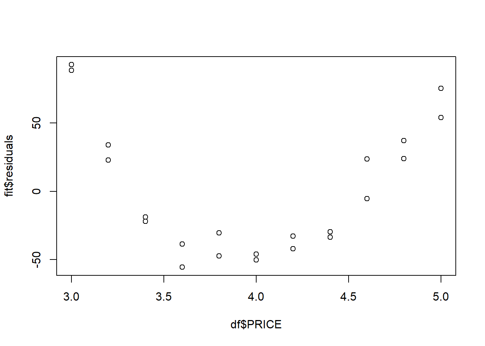
There is an obvious trend. Therefore it implies a lack of fit.
Now consider the partial residual plot for PRICE:
plot(df$PRICE, fit$residuals+fit$coefficients['PRICE']*df$PRICE)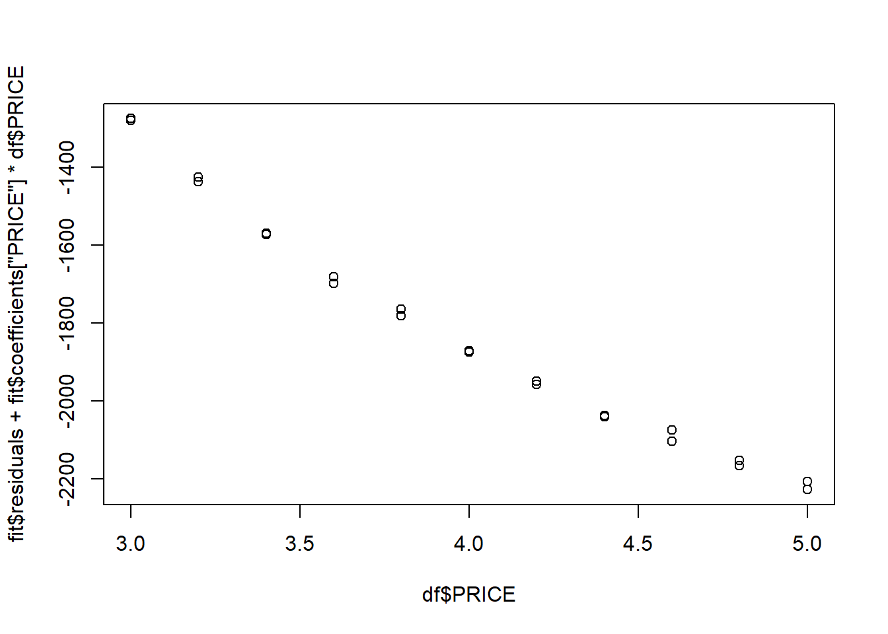
Now modify the model by making \(x_1=1/PRICE\). Let us run the model again.
fit2 <- lm(DEMAND~.-PRICE+I(1/PRICE), data=df)
summary(fit2)
##
## Call:
## lm(formula = DEMAND ~ . - PRICE + I(1/PRICE), data = df)
##
## Residuals:
## Min 1Q Median 3Q Max
## -21.353 -6.721 -3.707 8.259 23.356
##
## Coefficients:
## Estimate Std. Error t value Pr(>|t|)
## (Intercept) -1217.343 14.898 -81.71 < 2e-16 ***
## AD 70.182 4.732 14.83 6.71e-12 ***
## I(1/PRICE) 6986.507 56.589 123.46 < 2e-16 ***
## ---
## Signif. codes: 0 '***' 0.001 '**' 0.01 '*' 0.05 '.' 0.1 ' ' 1
##
## Residual standard error: 11.1 on 19 degrees of freedom
## Multiple R-squared: 0.9988, Adjusted R-squared: 0.9986
## F-statistic: 7731 on 2 and 19 DF, p-value: < 2.2e-16
plot(df$PRICE, fit2$residuals)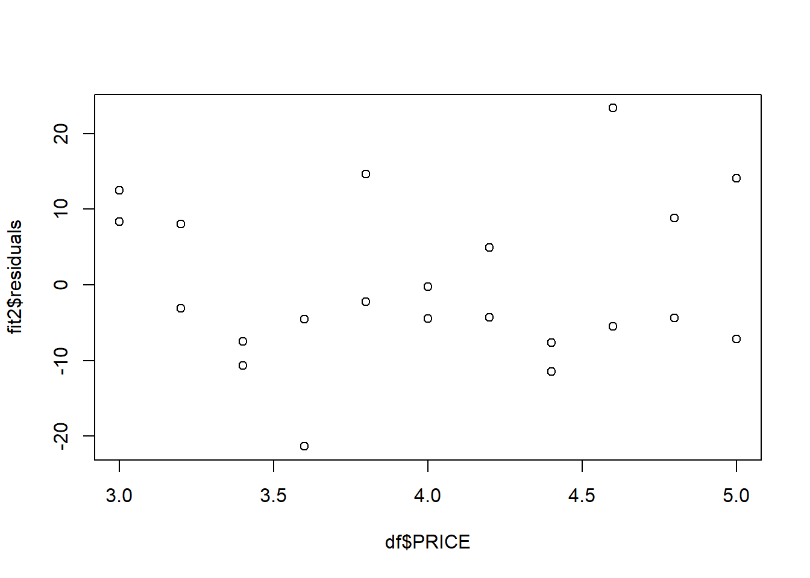
plot(df$PRICE, fit2$residuals+fit$coefficients['PRICE']*df$PRICE)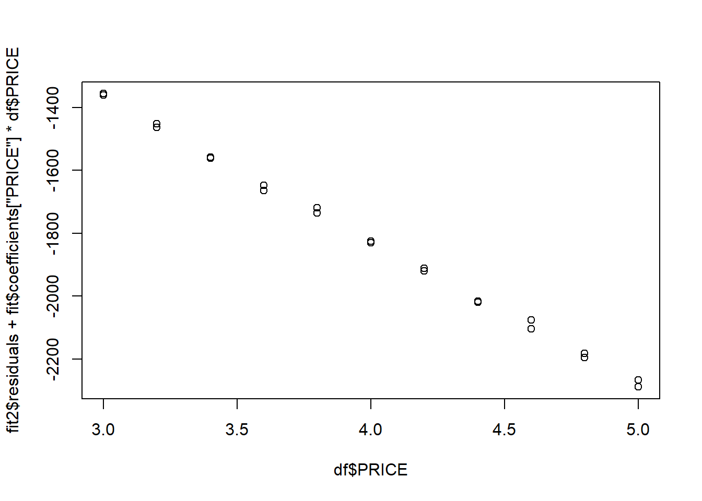
TipWhat You Should Expect in a Partial Residual Plot
Partial residual plot is like looking at the impact of a single variable. It will show you how a certain variable is contributing to the response variable \(y\).
- You expect to see a roughly linear pattern between the predictor and the partial residuals. If the relationship is nonlinear, it suggests a transformation or non-linear model might be better.
- No strong curvature or pattern. Patterns like U-shapes or waves indicate the model may be missing a non-linear term (e.g., \(x^2\), \(\log(x)\)).
- The spread of points should be roughly even across the range of the predictor.
- The residuals should be centered around zero, showing that the model doesn’t systematically over- or under-predict.
7.1.3 Homoscedastic vs Heteroscedastic
This part is about whether the variance is equal.
Note
- Variances that satisfy this property are called homoscedastic.
- Unequal variances for different settings of the independent variable(s) are said to be heteroscedastic.
Possible reasons: the variance is a function of its mean \(E(y)\). In this case we perform a transformation to \(y\). It is called variance-stabilizing transformations.
| Type of Response | Variance | Stabilizing transformation |
|---|---|---|
| Poisson | \(E(y)\) | \(\sqrt{y}\) |
| Binomial | \(E(y)[1-E(y)]/n\) | \(\sin^{-1}{\sqrt y}\) |
| Multiplicative | \([E(y)]^2\sigma^2\) | \(\ln{y}\) |
df <- read.csv("SOCWORK.csv")
head(df)## EXP SALARY LNSALARY EXPSQ
## 1 7 26075 10.1687 49
## 2 28 79370 11.2819 784
## 3 23 65726 11.0932 529
## 4 18 41983 10.6450 324
## 5 19 62308 11.0398 361
## 6 15 41154 10.6251 225fit <- lm(SALARY~EXP+I(EXP^2), data=df)
summary(fit)
##
## Call:
## lm(formula = SALARY ~ EXP + I(EXP^2), data = df)
##
## Residuals:
## Min 1Q Median 3Q Max
## -15360.3 -4703.4 -783.5 3872.7 22716.2
##
## Coefficients:
## Estimate Std. Error t value Pr(>|t|)
## (Intercept) 20242.12 4422.59 4.577 3.46e-05 ***
## EXP 522.30 616.68 0.847 0.40131
## I(EXP^2) 53.01 19.57 2.708 0.00941 **
## ---
## Signif. codes: 0 '***' 0.001 '**' 0.01 '*' 0.05 '.' 0.1 ' ' 1
##
## Residual standard error: 8123 on 47 degrees of freedom
## Multiple R-squared: 0.8157, Adjusted R-squared: 0.8078
## F-statistic: 104 on 2 and 47 DF, p-value: < 2.2e-16plot(fit$fitted.values, fit$residuals)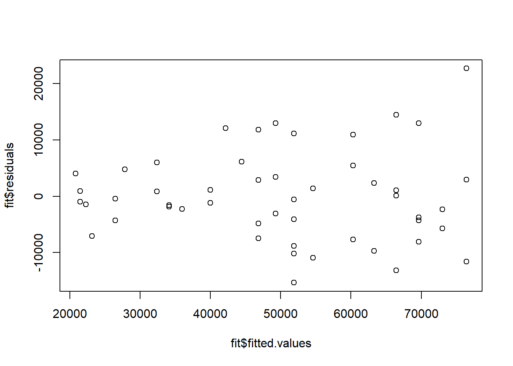
It has a very rough fang pattern. So we try \(\log\) transformation.
fit2 <- lm(log(SALARY)~EXP+I(EXP^2), data=df)
summary(fit2)
##
## Call:
## lm(formula = log(SALARY) ~ EXP + I(EXP^2), data = df)
##
## Residuals:
## Min 1Q Median 3Q Max
## -0.35492 -0.09022 -0.01778 0.09756 0.26265
##
## Coefficients:
## Estimate Std. Error t value Pr(>|t|)
## (Intercept) 9.843e+00 8.479e-02 116.079 < 2e-16 ***
## EXP 4.969e-02 1.182e-02 4.203 0.000117 ***
## I(EXP^2) 9.415e-06 3.753e-04 0.025 0.980091
## ---
## Signif. codes: 0 '***' 0.001 '**' 0.01 '*' 0.05 '.' 0.1 ' ' 1
##
## Residual standard error: 0.1557 on 47 degrees of freedom
## Multiple R-squared: 0.8635, Adjusted R-squared: 0.8577
## F-statistic: 148.7 on 2 and 47 DF, p-value: < 2.2e-16plot(fit2$fitted.values, fit2$residuals)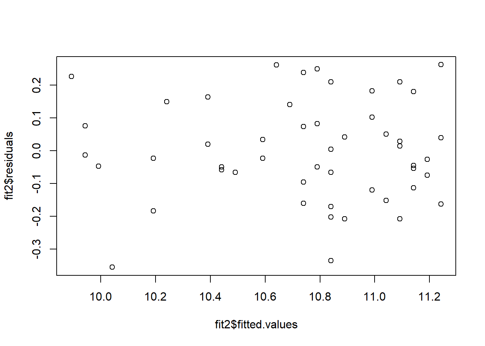
7.1.4 Normality
The last topic to check the normality of the common distribution of the residuals. The most common tool is called Q-Q plot (Quantile-Quantile plot): a plot to compare the quantiles of your data to the quantiles of a standard normal distribution.
NoteExpectations from a Q-Q plot
- If the points are on the reference line, then the points follow normal distribution.
- Points lower the line indicate a left skewness. Points above the line indicate a right skewness.
qqnorm(fit$residuals)
qqline(fit$residuals)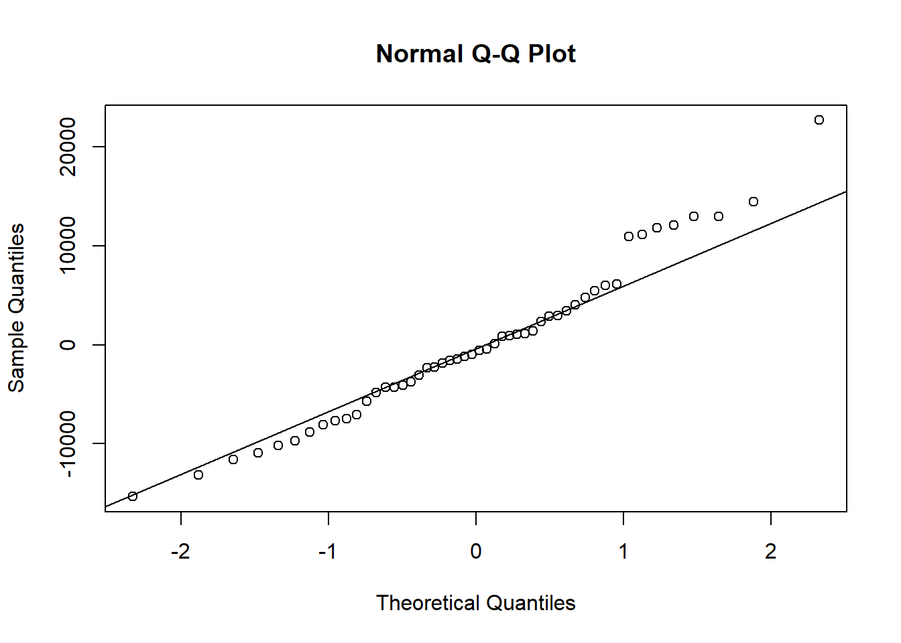
qqnorm(fit2$residuals)
qqline(fit2$residuals)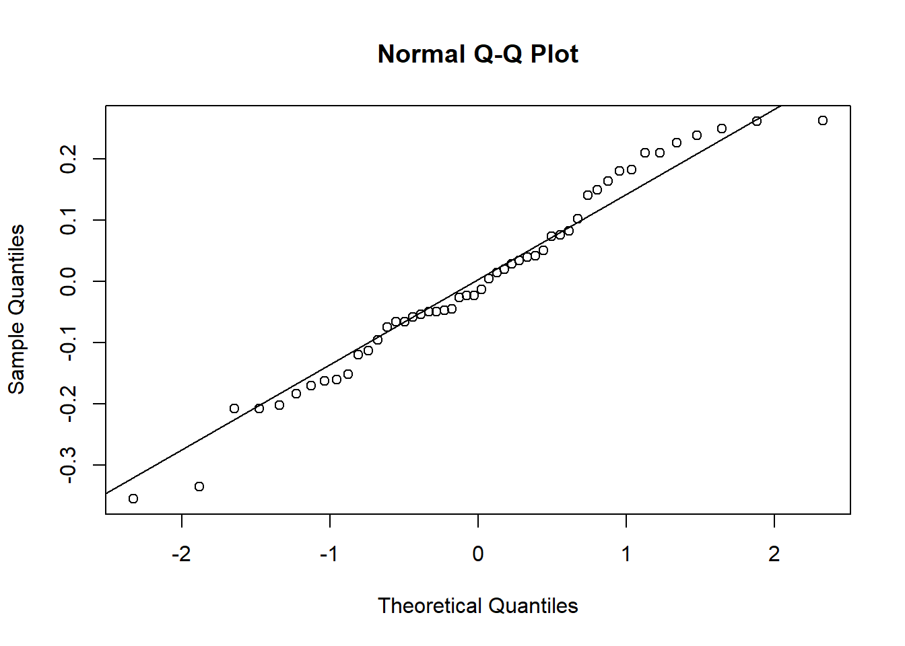
Usually nonnormality is accopanied by heteroscedasticity. For more transformations, we could use Box-Cox approach.
Note
Keep in mind that regression is robust with respect to nonnormal errors if the sample size is reasonable large. However, if the distribution of the residuals is highly skewed, you may want to search for a normalizing transformation, for example, using Box-Cox approach.
NoteBox-Cox transformation
The Box-Cox transforamtion is defined as
\[ \begin{split} y(\lambda)&=\frac{y^{\lambda}-1}{\lambda}\approx y^{\lambda}\quad\text{ for }\lambda\neq 0,\\ y(\lambda)&=\log(y)\quad\text{ for }\lambda=0 \end{split} \]
After we apply the Box-Cox transformations with different \(\lambda\) to \(y\), we use a model to fit the transformed data, and then study the corresponding residuals. For each model, we compute the likelihood of the model’s residuals under the assumption that the errors are noramlly distributed. Then we would pick the \(\lambda\) with the maximal likelihood.
This part is done by the following code. We generate the Box-Cox plot with is log-likelihood vs. \(\lambda\). We find the best \(\lambda\) based on the plot, and perform the corresponding transformation.
Let us consider the original example.
library(MASS)
boxcox(fit, data=df)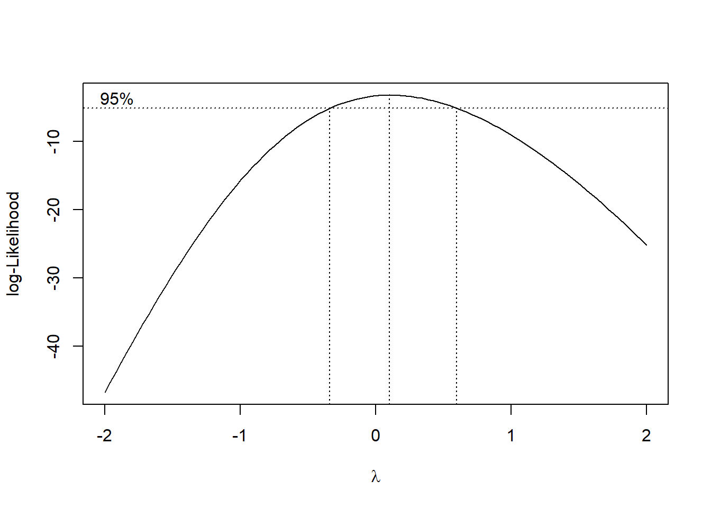
The peak is around \(\lambda=0\), so we will apply \(\log\) transformation to \(y\).
7.2 Detecting outliers
7.2.1 Standardized residuals
Definition 7.1 The standardized residual, denoted \(z_i\), is \(z_i=\hat{\varepsilon}_i/s\).
Outliers are points whose standarized residual is beyond 1, 2, 3, etc.. The threshold is based on the confidence level. Usually we use 2.
7.2.2 influential observations
- leverage
- Cook’s distance
df <- read.csv("FASTFOOD.csv")
df$CITY <- as.factor(df$CITY)
head(df)## CITY TRAFFIC SALES X1 X2 X3
## 1 1 59.3 6.3 1 0 0
## 2 1 60.3 6.6 1 0 0
## 3 1 82.1 7.6 1 0 0
## 4 1 32.3 3.0 1 0 0
## 5 1 98.0 9.5 1 0 0
## 6 1 54.1 5.9 1 0 0fit <- lm(SALES~TRAFFIC+CITY, data=df)
df$CITY <- as.factor(df$CITY)
summary(fit)
##
## Call:
## lm(formula = SALES ~ TRAFFIC + CITY, data = df)
##
## Residuals:
## Min 1Q Median 3Q Max
## -11.681 -7.331 -1.390 1.719 56.464
##
## Coefficients:
## Estimate Std. Error t value Pr(>|t|)
## (Intercept) -15.3532 11.0339 -1.391 0.1802
## TRAFFIC 0.3629 0.1679 2.161 0.0437 *
## CITY2 5.0367 10.2984 0.489 0.6304
## CITY3 13.3835 7.6893 1.741 0.0979 .
## CITY4 -1.1061 8.4226 -0.131 0.8969
## ---
## Signif. codes: 0 '***' 0.001 '**' 0.01 '*' 0.05 '.' 0.1 ' ' 1
##
## Residual standard error: 14.86 on 19 degrees of freedom
## Multiple R-squared: 0.2595, Adjusted R-squared: 0.1036
## F-statistic: 1.665 on 4 and 19 DF, p-value: 0.1996Definition 7.2 (Leverage) The leverage of the ith observation is the weight \(h_i\) associated with \(y_i\) in the equation
\[ \hat{y}_i=h_1y_1+h_2y_2+\ldots+h_iy_i+\ldots+h_ny_n \] where \(h_1\), …, \(h_n\) are functions of only the values of the independent variables in the model. It measures the influence of \(y_i\) on its predicted value \(\hat{y_i}\).
NoteRule of Thumb for detecting influence with leverage
\(y_i\) is influential if \(h_i>\dfrac{2(k+1)}{n}\) where \(k\) is the number of variables.
| Low Residual | High Residual Low Leverage | Unimportant | Small influence High Leverage | Maybe okay | ❗ High influence ❗
Definition 7.3 (Cook’s distance) \[ D_i=\frac{\sum (\hat{y}_j-\hat{y}_{j(i)})^2}{p\cdot MSE} \] where - \(\hat y_j\) = predicted value from full model - \(\hat{y}_{j(i)}\) = predicted value without the i-th point - \(p\) = number of parameters (including intercept) - \(MSE\) = mean squared error
Values of \(𝐷_𝑖\) can be compared to the values of the 𝐹 distribution with \(𝜈_1 = 𝑘 + 1\) and \(𝜈_2 = 𝑛 − (𝑘 + 1)\) degrees of freedom.
Usually, an observation with a value of \(𝐷_𝑖\) that falls at or above the 50th percentile of the 𝐹 distribution is considered to be an influential observation.
A range rule of thumb is: if \(𝐷_𝑖 >1\) indicate that the 𝑖th observation is influential and should be studied further.
NoteRule of Thumb for Cook’s distance
- \(D_i\approx 0\): not influential
- \(D_i\approx 0.5\): worth looking into
- \(D_i>1\): Highly influential, investigate further
To compute cook’s distance,
cooks.distance(fit)
## 1 2 3 4 5 6
## 2.315699e-06 6.612132e-07 1.142570e-02 1.247986e-02 6.688119e-02 3.454261e-04
## 7 8 9 10 11 12
## 3.838848e-04 4.156670e-04 7.281906e-03 1.816125e-02 1.235505e-02 3.045589e-04
## 13 14 15 16 17 18
## 1.195665e+00 1.963451e-02 1.560885e-02 2.454621e-02 1.454909e-02 8.278103e-03
## 19 20 21 22 23 24
## 1.980053e-02 8.088886e-04 4.219801e-03 3.581089e-04 1.047277e-02 1.760832e-01and detect influential points:
which(cooks.distance(fit)>1)
## 13
## 137.3 plot(fit)
We can use plot(fit) to directly get plots related to residual analysis.
It contains several plots.
plot(fit, which=1)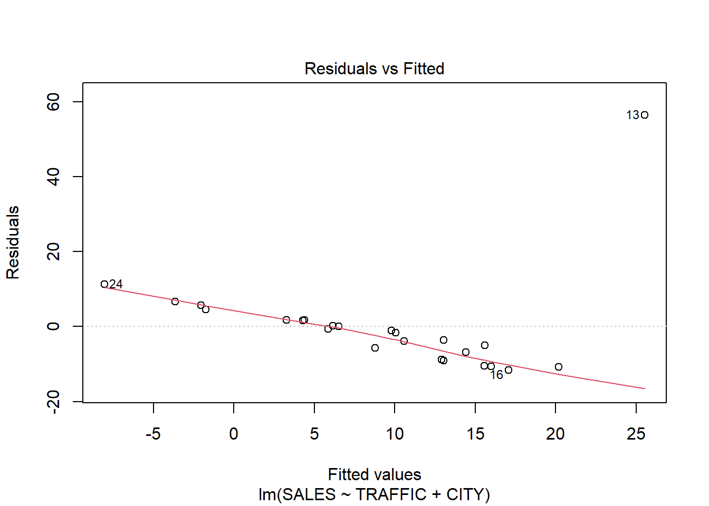
This typically produces the residuals vs. fitted values plot. It is used to assess the linearity assumption and to check for patterns in the residuals. If the residuals exhibit a random scatter around zero with no clear pattern, it suggests that the model’s assumptions are reasonable. On the other hand, if there is a pattern (e.g., curvature), it may indicate that the model is not appropriately capturing the relationship between the predictor(s) and the response variable.
plot(fit, which=2)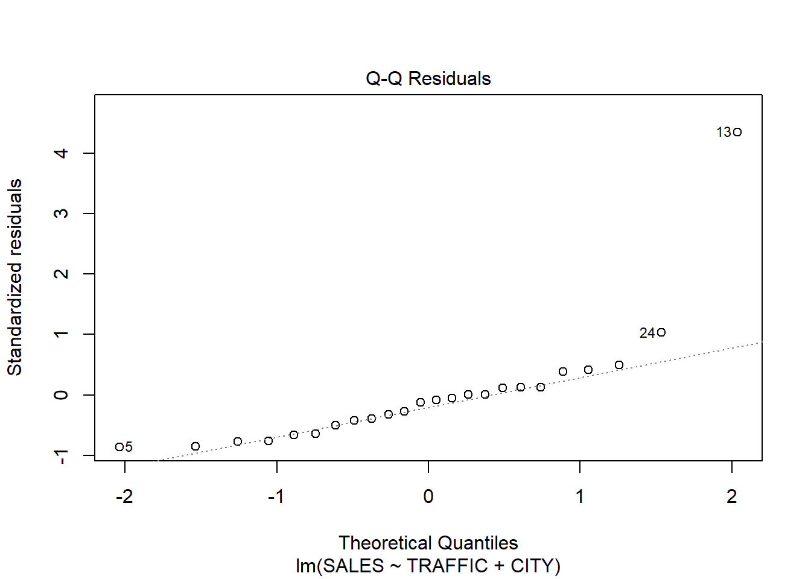
This is the Q-Q plot.
plot(fit, which=3)
This is the scale-location plot (also called a “spread-location plot”), which helps to check for homogeneity of variance (constant variance of residuals). It plots the square root of the standardized residuals against the fitted values, and a horizontal band of points indicates that the variance is constant.
plot(fit, which=5)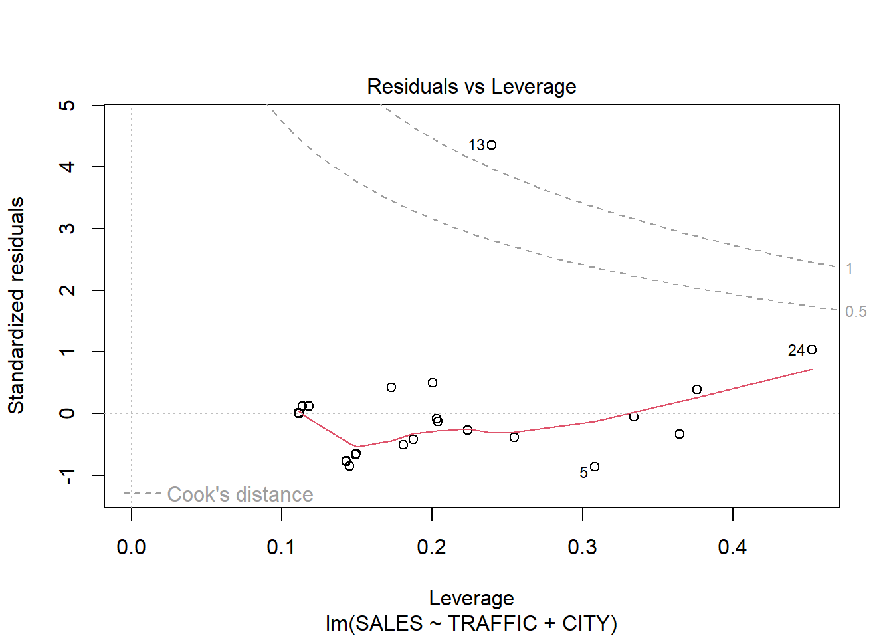
This is the residuals vs leverage plot. - x-axis: leverage - y-aixs: studentized residuals - bubble size: cook’s distance
In this plot: - read it horizentally to get the leverage information: to tell how influential the data is - read it vertically to get the standardized information: to tell how “outlier” the data is - use the cook’s distance contour line to tell the cook’s distance of the data point
In this case, you can see an outlier #13: it has high residual, low leverage, ok cook’s distance. So it is an OK outlier which doesn’t have a big influence.